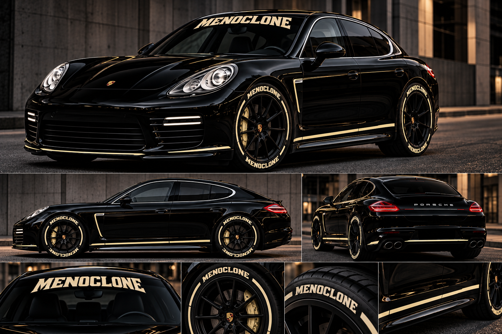

Refine the concept
Develop the livery, materials, visuals and presentation.
The 2027 vision / by OdotNYC
One dream car. One independent design vision. A manifesto for what comes next.

Founder’s note
To OdotNYC, the Porsche Panamera is a dream car because it balances elegance, engineering and an unmistakable street presence. This visual concept is an expression of what happens when that inspiration meets MENOCLONE’s creative language: deep black, heritage gold, and details made to be seen.
“Keep Your Vision Further Than Your Eyesight!”
Not just a car wrap. A statement that dreams deserve designs, designs deserve work, and work deserves a destination.
View the 2027 Vision ↓The manifesto
We believe in learning before claiming mastery. In celebrating automotive heritage while bringing our own perspective to the road. In making room for builders, artists and young engineers to see themselves in motorsports. The Panamera concept is a symbol of that journey — not an announcement of a finished vehicle.
2027 is our target year for advancing this independent concept. The milestones below are goals, not confirmed launch dates.
Develop the livery, materials, visuals and presentation.
Research vehicle fitment, fabrication, diagnostics and technical feasibility.
Pursue partners, funding and opportunities for a real-world showcase.
Follow the story through @menoclone on Instagram.